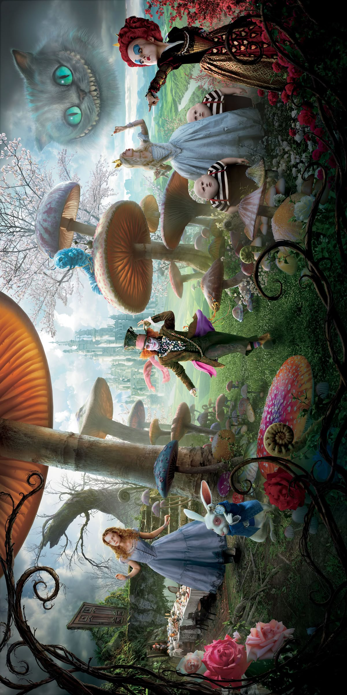

Alicia en el País de las Maravillas (Alice in Wonderland)
Personajes

Reparto
- Johnny Depp como Tarrant Hightopp / Sombrerero Loco
- Mia Wasikowska como Alice Kingsleigh
- Helena Bonham Carter como la Reina Roja
- Anne Hathaway como Mirana / Reina Blanca
- Crispin Glover como Ilosovic Stayne / Canalla de Corazones
- Matt Lucas como Tweedledum / Tweedledee
- Frances de la Tour como Imogene: la tía de Alice
- Leo Bill como Hamish Ascot: el prometido de Alice
- Marton Csokas hace un cameo como el padre fallecido de Alice
- Lindsay Duncan como la madre de Alice
- Tim Pigott-Smith y Geraldine James como Lord y Lady Ascot
- Eleanor Tomlinson y Eleanor Gecks como las hermanas Chattaway, Fiona y Faith
- Jemma Powell como Margaret, la hermana de Alice
- John Hopkins como el marido infiel de Margaret, Lowell
Reparto de voces
- Michael Sheen como Nivens McTwisp / White Rabbit
- Alan Rickman como Absolem la Oruga
- Stephen Fry como Gato de Cheshire
- Barbara Windsor como Mallymkun el Lirón
- Timothy Spall como Bayard Hamar / Sabueso
- Paul Whitehouse como Thackery Earwicket / March Hare
- Michael Gough como Uilleam el Dodo
- Christopher Lee como El Jabberwocky
- Imelda Staunton como Las Flores Parlantes
- Jim Carter como El Verdugo